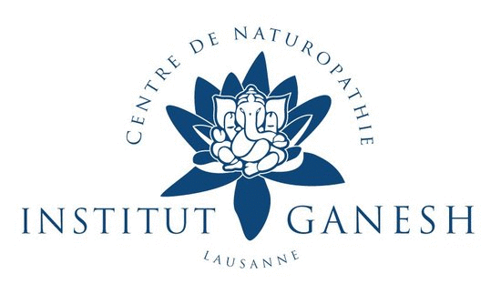

« L’Ayurvéda » signifie « science de la vie ». C’est une médecine traditionnelle indienne vieille de plus de trois mille ans. Son approche holistique vise à atteindre l’équilibre de la pensée, du corps et de l’esprit. Elle considère l’être humain dans son environnement, en fonction des cycles de la nature, de la journée, des saisons et des différentes étapes de la vie.

INSTITUT GANESH - Rue du Pont 22 – 1003 Lausanne – 021 617 35 78
L’ayurvéda valorise le bien-être physique, émotionnel et spirituel de la personne et lui permet ainsi de vivre en accord total avec les lois de la nature et du cosmos.
Lorsque l’équilibre parfait des trois doshas est perturbé, les symptômes de la maladie peuvent apparaître. Les traitements et techniques ayurvédiques ont comme objectif d’atteindre l’équilibre parfait selon la constitution.
BUT DES MASSAGES :
- réduction du stress, diminution des angoisses
- permet de se recentrer, de se retrouver soi-même
- nourrit les tissus, redonne souplesse aux articulations
- équilibrage des 3 Forces Motrices ou doshas ( vata-pitta-kapha )
- élimination des toxines, meilleure circulation de l’énergie
- stimulation du système cardio-vasculaire et drainage de la lymphe